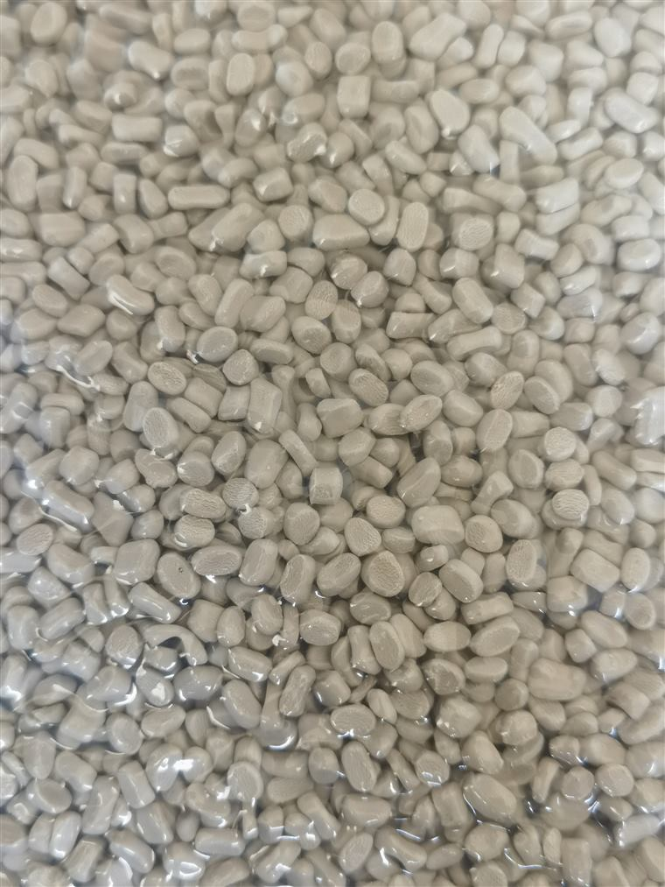
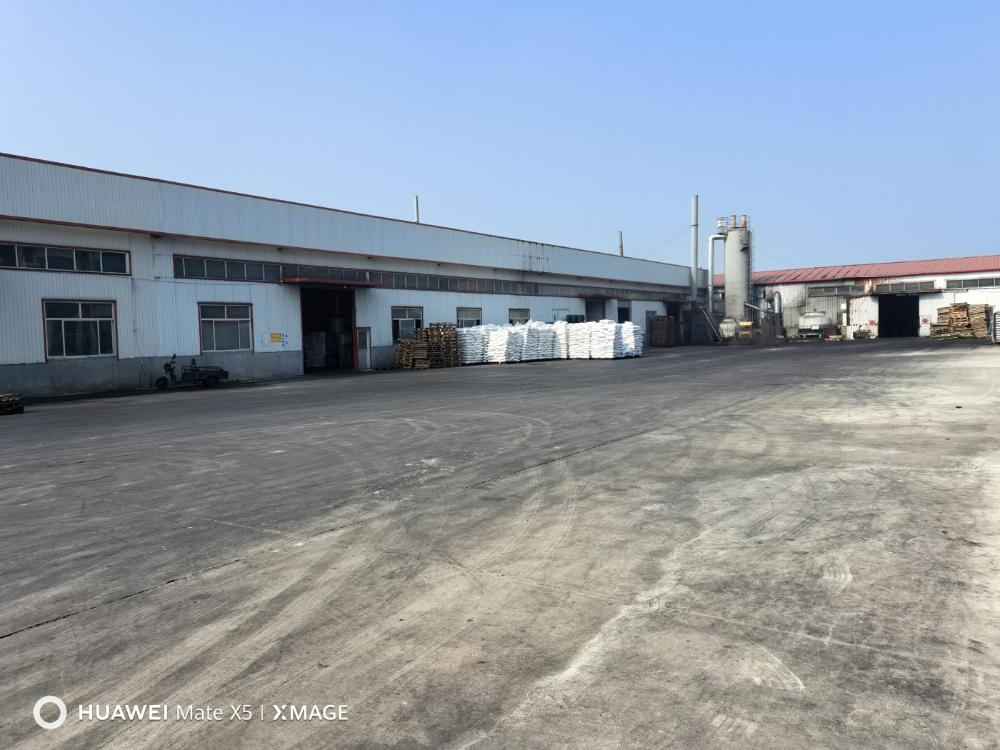
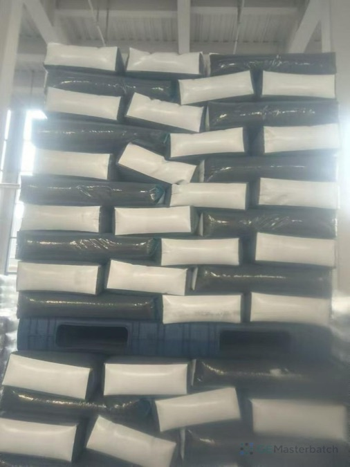
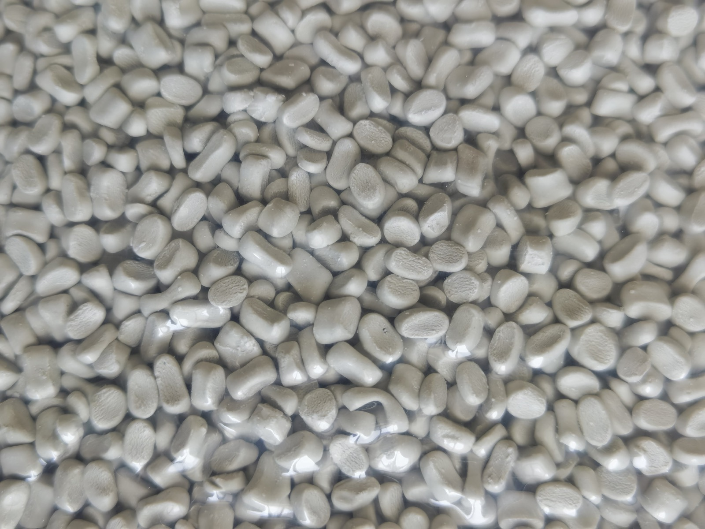
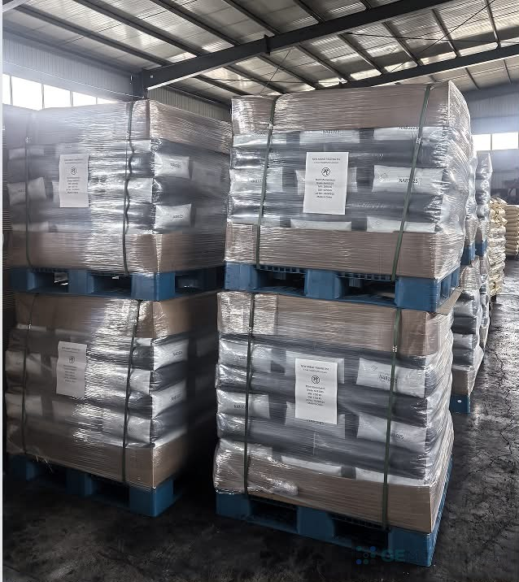

What must the finished product look like?
Share a reference part, customer standard or description of the desired white appearance.
Do not treat a photograph as a full specification.White masterbatch / Application guide
White masterbatch for film, packaging and injection molding, reviewed through opacity, whiteness, TiO2 context, base resin, process and the exact document scope.



01 / Three inputs
A color name is not enough. White masterbatch inquiries become clearer when the buyer separates whiteness, opacity and TiO2 context.
Share a reference part, customer standard or description of the desired white appearance.
Do not treat a photograph as a full specification.Film thickness, part wall, substrate color and end application can change the discussion.
Opacity is reviewed against the actual product.TiO2 may be part of the buyer brief. A fixed product content is not inferred from this page.
Exact grade data must support the final review.02 / Application route
Film, packaging and injection molding each expose a different combination of appearance, coverage and processing context.

White route / Film + packaging
Start with the film structure, thickness, substrate and appearance target. White masterbatch for film is a buyer context, not a universal suitability claim.
Bring film thickness, current visual issue, resin and opacity target.
Describe the finished pack, reference sample and whiteness requirement.
Share resin, part geometry, coverage target and current grade if known.
03 / Document scope
The existing FDA-related report supports the named GE CHEMICAL white sample, Grade MB Blanco PE. It cannot be extended into a claim that every white masterbatch grade is FDA compliant or suitable for every food-contact application.
Request TDS, SDS/MSDS, COA or FDA-related review by form. The team checks the exact grade, application, country and intended use before replying.

Next step / White masterbatch
Include resin, process, end product, whiteness or opacity target, TiO2 context if known, current grade and the document review you need.